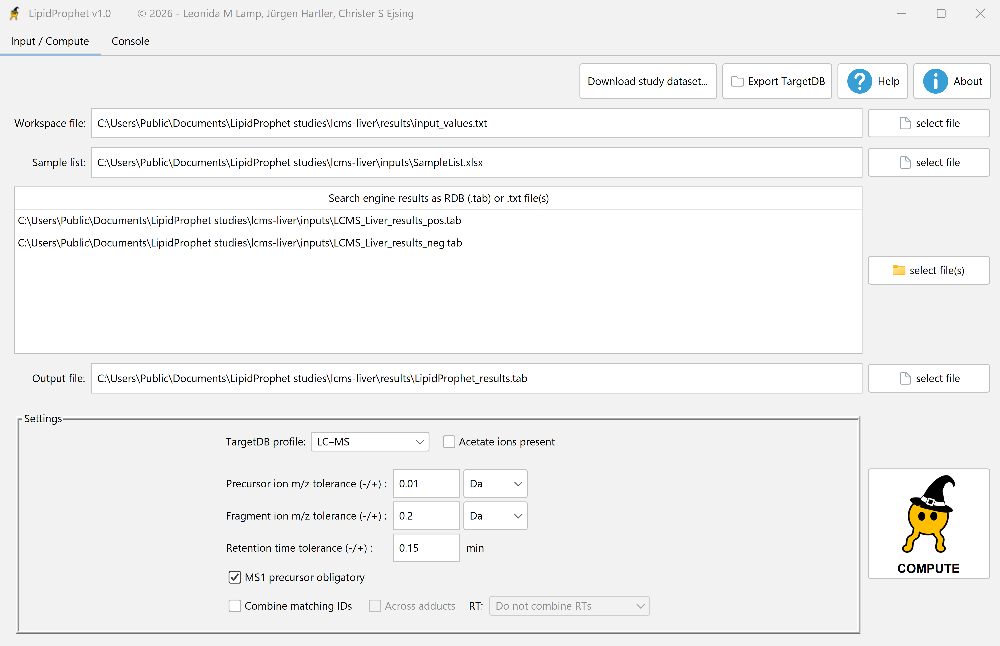

1. Export the RDB summary
Complete the LDA search and load its result files in Statistical analysis. Review the retention-time grouping for your method. Use rdb to export the classes as a .tab summary. Keep the raw file identifiers and upstream headers intact.
2. Connect the results to the sample list
In LipidProphet, select the RDB file or files under Search engine results. In the SampleList worksheet, match RAW_ID to the identifiers inside the RDB. Set Sample_type and Acquisition_group for the replicate groups you want to score. See a guide to the three columns.


3. Choose the LC–MS settings
Select LC-MS as the TargetDB profile. Match the negative-mode adduct chemistry, precursor and fragment mass windows, and retention-time tolerance to the acquisition and upstream search.
4. Run and review
Choose a workspace and a .tab output path, then click Compute. Compare the retained count across cutoffs in the QC tab and filter the exported LP scores.
The in-app catalog includes LC-MS brain (LDA), LC-MS liver (LDA), and LC-MS liver Q-TOF (LDA), each with a reference table. See the study packages.
For help with LDA exports or LC–MS workflows, contact Jürgen Hartler.